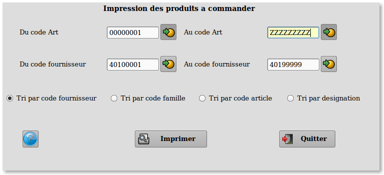

~ Comptabilité et Facturation Laurux ~

~ Comptabilité et Facturation Laurux ~ |
|
|
|

Ce programme permettra d'imprimer une liste des
produits à commander, c'est a dire des produits dont la rupture est
avérée ou imminente. Les produits a commander seront séléctionnés si le
stock réel + la quantité en commande fournisseur - la quantité en
commande client est inférieur au stock mini déclaré dans la fiche du
produit.
Le calcul des quantités à commander
est effectué de la façon suivante. Stock maxi - stock réel + la quantité en commande fournisseurs - quantité en
commande clients.
On peut sélectionner une liste de produits et/ou
fournisseurs. On peut aussi faire un tri par fournisseur, famille, code
article ou désignation. Si le tri est fait sur le fournisseur ou la
famille alors on aura une ligne de séparation à chaque changement de
fournisseur ou de famille.
----------------------------------------------------------------------------------------------------------------------